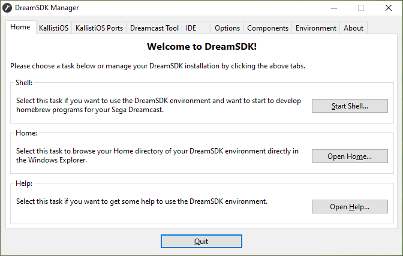

Home
The first screen that will shows up when starting the DreamSDK Manager tool
is the Home tab.

This screen allows you to do three tasks:
- Run the DreamSDK Shell, and start using the DreamSDK
environment.
- Open the yout personal DreamSDK home directory. This is
the first directory where you are located when starting the Shell. You can
return on it anytime by entering cd ~/ at
the command prompt.
- Open the Help system, which you probably did as you are
reading this line!